How Frankie found clarity, and a better way to renew
Frankie had two policies, two providers and no idea what either covered, so he renewed without comparing. HUB saw the opportunity: with VIU, it could become the trusted partner that helps people like him get better coverage and prices before each renewal.
My role
I led the end-to-end design of VIU’s Account space, where Frankie can see all his policies in one place, understand what they cover, and find better options when it’s time to renew.
About
Project:
Insurance profile
Client:
VIU by HUB
Team:
2 FE, 1 UX writer, 1 PM
Timeline:
2022–2023
Meet Frankie
32 years old Homeowners · Huntington, NY Auto · 2020 Nissan Rogue
What frustrates him: not knowing what he’s actually covered for, and renewing without comparing.
Composite persona based on our research participants
Impact
Built for a new generation. Adopted far beyond it.
80% of HUB clients moved to VIU
20% fewer customer support requests
+1,000 users imported their policies
02. The challenge
A quote alone wouldn’t make them stay
HUB wanted to be there before every renewal, not just once.
A new generation was buying insurance online, from digital-first players like Lemonade and Policygenius. HUB had the carriers and the expertise, but no digital place where customers could manage their insurance. VIU was HUB’s answer, built in two parts at the same time: a quoting experience to bring people in, and an account space to make them stay.
The problem
How might we give people one clear place for all their insurance, and make HUB the partner they turn to before every renewal?
VIU would win a younger audience. HUB’s existing clients weren’t expected to follow. Success meant sign-ups, imported policies and quotes.
Four things made this hard:
01
Fragmented data
Many sources, one place.
02
Regulated complexity
Plain words, exact facts
03
Selling without breaking trust
His space, HUB’s funnel.
04
One design, many policies
Every type had to fit.
03. Key decisions
Every decision started with the business
I started from HUB’s business goals and a competitive analysis.
01. Show every policy, not just ours
Everything Frankie has, in one place.
We first planned to show only policies bought through HUB. But competitors like The Zebra let users upload any policy as a PDF.
We took it a step further: Frankie could connect his carrier account instead of uploading files. VIU became useful from day one, and HUB got the data to find better deals.
Based on Competitive analysis
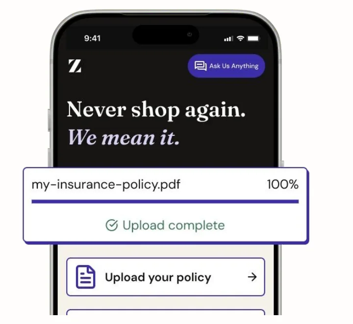
The Zebra asks users to upload a PDF. VIU connected directly to the carrier. Image: The Zebra.
02. Make every piece of data accountable
Frankie knows how fresh his data is.
To connect carrier accounts, we proposed Trellis, a partner that links users’ insurance accounts. That meant VIU would show data it didn’t own, updated on someone else’s schedule.
So every card shows its source and last sync, with a way to refresh. Trust was built into every card, not left to a disclaimer.
Based on Carrier data limits
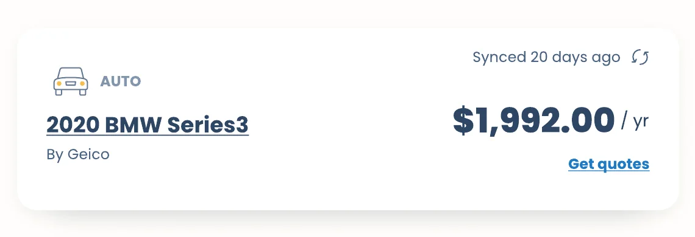
03. Organize by intent, not by product
Offers when Frankie is ready to act.
The easy option was a catalog of every product, shown the same way to everyone. But with Frankie’s policies in hand, the best offer was the one built on what he already has.
So the page puts his policies first, “Get quotes” on each one next, and new coverage last. Behind the scenes, HUB’s advisors prepared quotes before renewal, validating demand before automating it.
Based on Business goals · MVP constraints
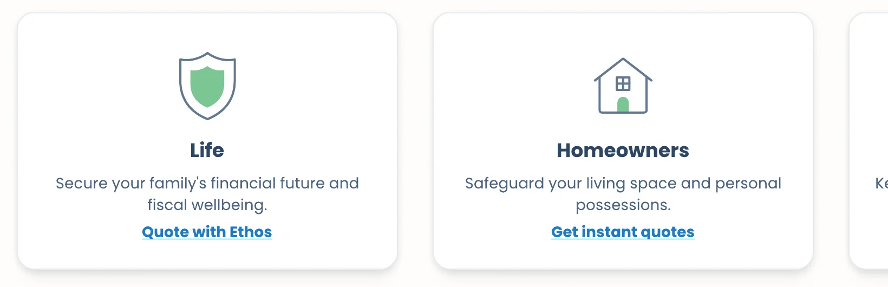
04. Validation
Clear screens, confusing words
Frankie still didn’t know what he was paying for
After HUB approved the first iteration, we tested it with 10 users from our target audience: how they managed their policies, how they reacted to offers, and how well they understood their coverage.
The biggest finding: even with clean screens, people weren’t sure what their coverage meant. So we kept the exact terms and explained each one, made renewal dates always visible, and turned “Add a new policy” into “Import a policy.”
Notes show paraphrased user feedback
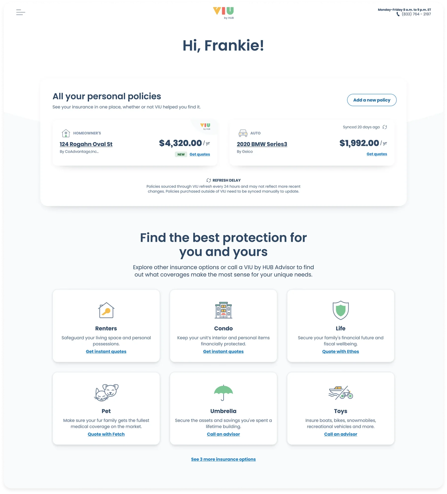
“Hmm, ‘Add a new policy’... so this is to buy a new one? (clicks) Oh, wait. It’s to connect the ones I already have. Okay, that’s actually great, I just wouldn’t have guessed it.”
“I mean, I don’t see myself logging in every day. If I come in, it’s probably to check when something’s due... so, yeah, I’d want to see the renewal dates right there.”
“How do I start a quote? Maybe if I click the card...? (clicks) Oh, okay, I like that. It doesn’t feel like you’re pushing me. I actually kind of want to know if I’m overpaying.”
“Oh, nice, it tells me about the refresh delay. But... can’t it just update by itself? Like, if I change something with my provider, it should show up here.”
“Okay, these are like, other insurance I could get? Some of these I don’t care about at all, honestly. Can I hide them? And if there was a price, even a rough one, that’d be amazing.”
Home screen
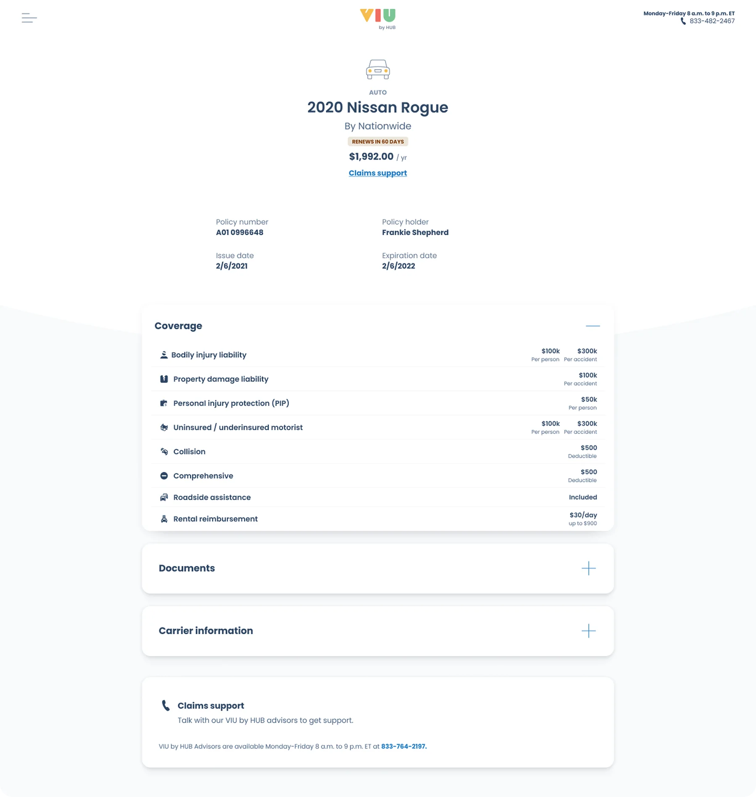
“Okay, so this is my policy... it looks kind of empty? (scrolls) Oh, there it is. I didn’t realize there was more down here.”
“Oh, it says it’s renewing soon. If I tap that, does it take me to renew? (taps)”
“Could I compare this with, like, the same coverage from another company? Just to see.”
“Bodily injury liability... I mean, I paid for it, so I should know what it is, right? (laughs) But I’m not really sure.”
“I’m trying to figure out these icons... is this the car one? Honestly, they make it harder, not easier.”
Policy detail
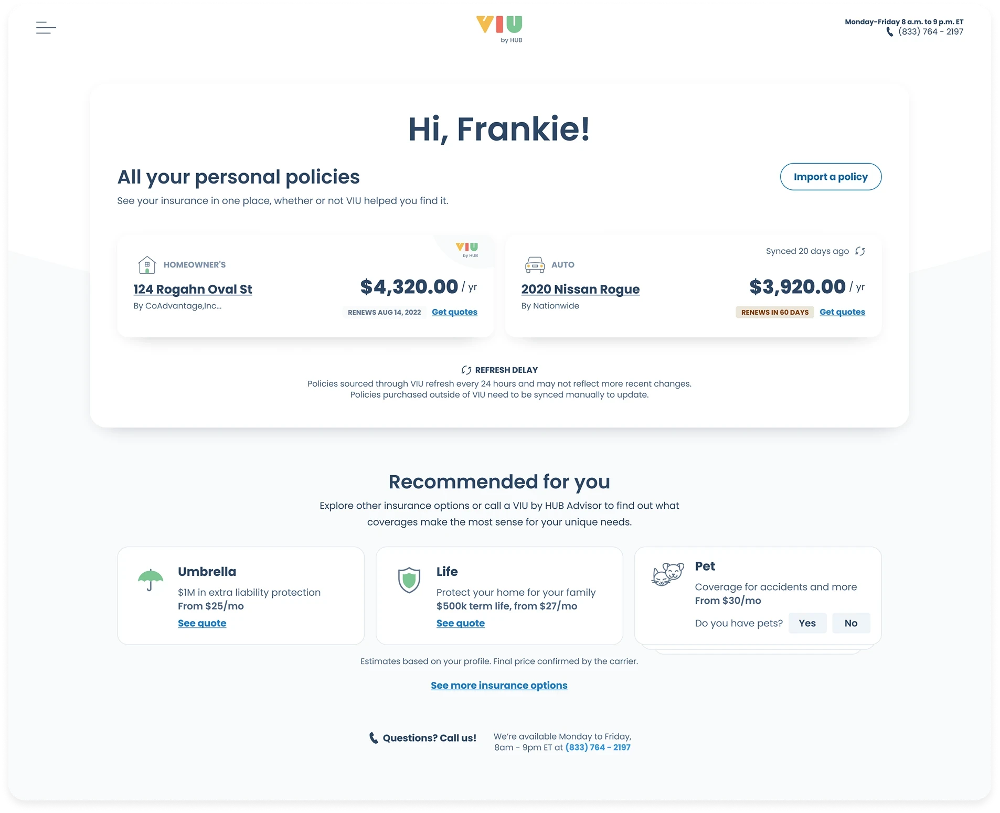
Import a policy. “Add a new policy” didn’t signal that the next step was signing in to another carrier. After a few iterations with our UX writers and internal reviews, “Import” made the action clear.
Renewal date. Users compare renewal dates across their policies, so the date is now always visible. It starts as a gray label and becomes an alert as renewal gets close.
Personalized offers. Every VIU user has at least one policy, which is enough to start building a profile. Offers now react to the policies users already have, with estimated prices and a direct path to quote. Cards can also ask simple questions, like “Do you have pets?”, to unlock more relevant options. Designed for V2, as quoting moved beyond the manual MVP process.
Home screen
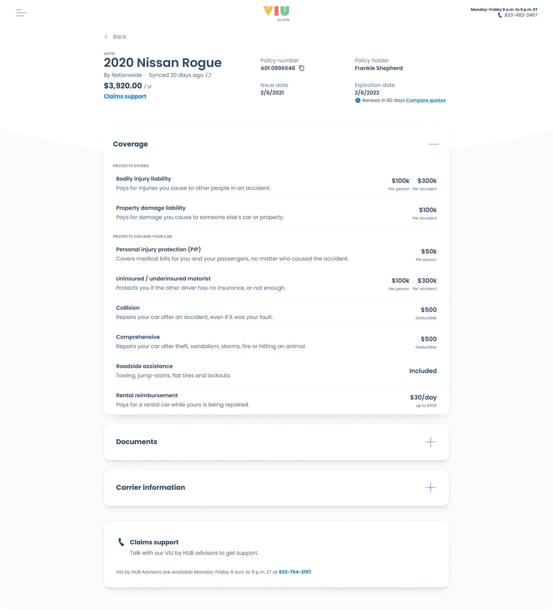
Above the fold. Tighter vertical spacing brings the key policy information into view, so users can scan it at a glance.
Compare quotes. Users wanted to compare right after reviewing their coverage, so “Compare quotes” now lives here too, next to the renewal date.
Clearer coverages. Removed the ambiguous icons and added plain-language descriptions. Coverages are grouped by who they protect: others, or you and your car.
Next on the roadmap: grading coverage, for example, showing whether your limits would cover an average accident in your state.
Policy detail
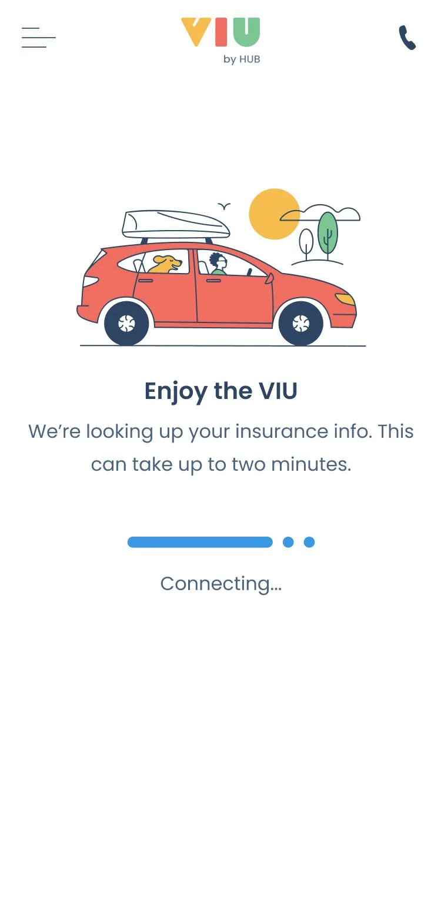
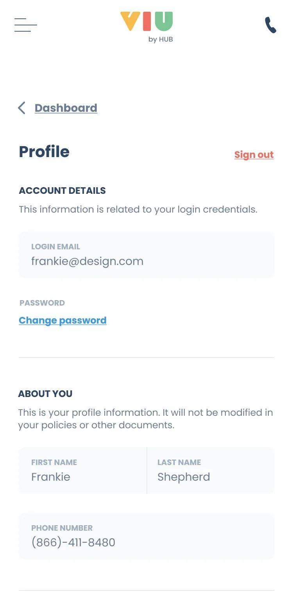
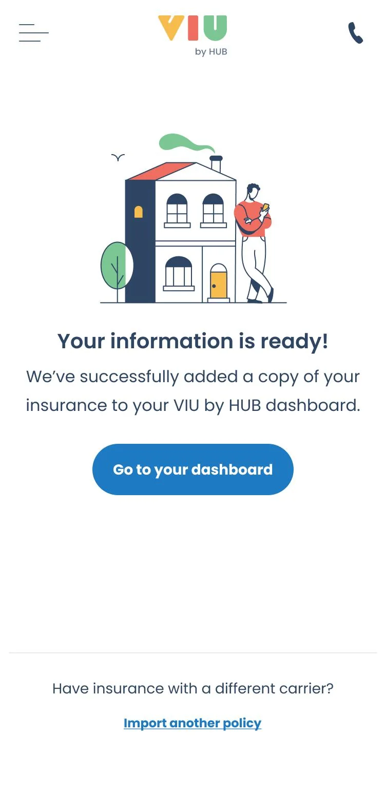
Mobile UI examples
05. Outcome
Built for one audience, adopted by two
People like Frankie came, and so did HUB’s clients.
Adoption far exceeded the business’s initial expectations. The biggest surprise wasn’t the young audience we designed for: many of HUB’s existing clients, the ones everyone assumed were less tech-savvy, also created VIU accounts using their HUB information. The profile we designed for Frankie became the portal HUB’s clients had been missing.
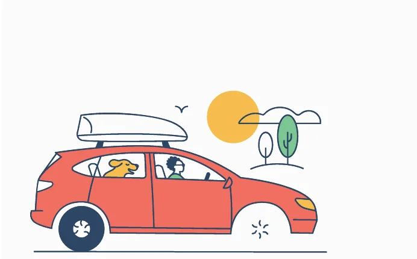
80% of HUB International users transitioned to the VIU platform.
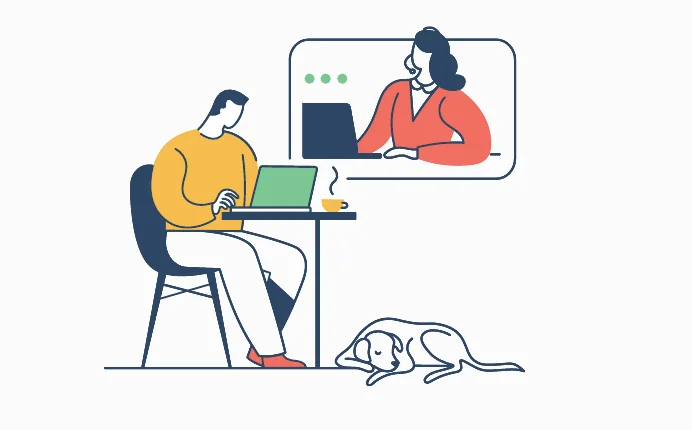
Reduced call volume for customer experience (CX) by 20% compared to the previous eight months.
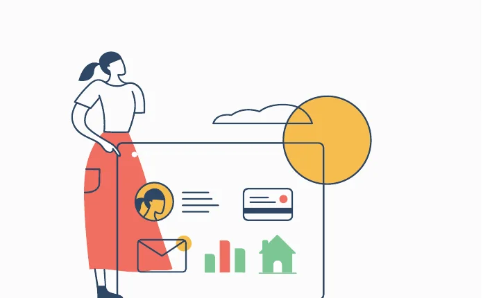
+1,000 new users uploaded their policies to VIU by HUB.
2023 Third quarter
06. Reflection
Design for who actually shows up
Measure the funnel
We tracked adoption, not quotes. I’d define the funnel before launch.
Question the brief
The brief left out HUB’s clients. They came anyway. I’d research them early.
Push for what users ask
Users asked for auto-sync; we explained the delay. I’d push for it sooner.